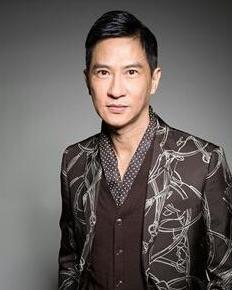
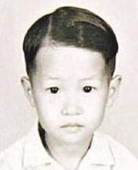
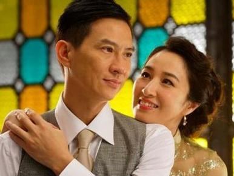

香港影帝-渣渣辉
-
简介
张家辉（Nick Cheung，1967年12月2日-），出生于中国香港，中国香港男演员、歌手、导演、西南大学硕士讲师。他参演过《壮志雄心》《证人》等多部影视作品，曾获第53届亚太影展最佳男主角奖、第10届华鼎奖中国最佳电影男演员奖、第46届金马奖最佳男主角奖等多个奖项。
 2013
2013
个人经历
-
儿童经历
张家辉，祖籍广东番禺。早年父母离异，随母亲长大，家中有三个姐姐。1984年就读皇家警察少年训练学校，后毕业于警察训练学校成为正式警员。1988年经人介绍加入李修贤的万能影业公司做幕后工作。1989年，在电影《壮志雄心》中出演少年警校学员，开始其演员生涯。
从小张家辉就有一个梦想：惩恶扬善、除暴安良，当一名光荣的警察。17岁，他终于考入警队，成为一名军装警员。工作4年后，他申请做一名便衣。因 为只有便衣才能办案，才有开枪的权利，他认为这才是真正的警察。但是上司以人手不足为由，不放他调走，年轻气盛的张家辉一怒辞职，当起无业游民。回想起这段往事，张家辉将其归为天生的冲动。
"无业青年"张家辉从没想过会进娱乐圈。但是给他介绍工作的恰恰是一个在李修贤电影公司做副导演的老同学。张家辉就跟着去做幕后，没想到做了还不到两个月，公司就要拍一部关于警察的片子《壮志雄心》，因为张家辉有当警察的经历，就让他出镜。
儿童时期张家辉 -
情感经历
在20世纪90年代初，张家辉与关咏荷仍为亚视效力之际，两人的恋情已是公开的秘密。相较于男友张家辉的大器晚成，关咏荷则无论在亚视，抑或过档无线时期，都是极受器重的当家花旦。反观张家辉，却是在无线出演《天地豪情》中的反派开始走红，之后得王晶赏识，主攻喜剧路线，演艺事业方才渐入佳境。
2003年底，两人在澳州秘密登记结婚，结束了十几年的爱情长跑。
2006年张童1月24日，关咏荷诞下女儿张童（Brittany）。
与张学友
张家辉自爆与张学友系亲兄弟 网友：真相大白
2014年8月底，影帝张家辉在接受采访时称张学友是他哥，并且是亲哥。节目曝光后，惊呆众微博网友，纷纷表示吃惊，并调侃称：“脑子跟不上眼”！
其实“亲大哥”是假，两人确为多年好友，私下关系好到足以“兄弟” 相称。此次骗倒众网友，粉丝不但没有发怒还得到网友的一致好评，称：“影帝好演技！”
关咏荷和张家辉
节目截图 -
社会经历
2009年6月，张家辉参加在香港跑马地马场举行的“半边天基金会筹款之夜”，呼吁社会各界伸出援手。
2010年4月，张家辉和莫少聪前往青海玉树了解灾情，并将拍得片段于4月26日举行慈善大汇演播放；5月，张家辉出席“苗圃行动”中国教育助学计划，并获委任助学大使。
2015年4月16日，协康会健乐大使张家辉出席慈善美食活动，呼吁全城参与，支援特殊需要儿童。艺人张家辉先生将出任“协康会健乐大使”，将联同多位米芝莲星级名厨及本会的特殊需要学童，为地球蛋糕装饰一番，带出活动主题“环球美食荟萃”，呼吁全港市民鼎力支持，齐心关注有特殊需要的儿童及其家庭。
2015年4月23日，张家辉亮相第五届北京国际电影节闭幕式。
2016年4月17日，张家辉出席“第二届全民投选电影金影奖颁奖礼”，成为民选最喜爱香港电影男主角。
张家辉
人物评价
没有出众的外表和运气，张家辉在影视圈打杂、跑龙套、演喜剧小人物已经有20年了，直到2009年，他凭借《证人》才拿到香港电影金像奖。成长于香港偶像明星的大环境下，张家辉不善交际，也不热衷于表达自己。在过去的20多年里，他露面少，少应酬，但一直做着一个普通演员的本份。
在忙的时候张家辉拍电影、发唱片、演舞台剧，还要跑去电台客串广播剧，没有家世背景，天资平平，然而他很认真、努力，这是对一个做演员的肯定。
张家辉
经典台词
每一个男人都有一颗不断追求的野心。
我不知道自己的巅峰在哪里，我还有很多路要跑去看看。
你对自身的一种要求，就像赌博一样，每一次我都尽情去赌，很投入。不管发生什么事，这台车开了就不能停，我是以这样的心态把戏完成的。
我会一直往前跑，有多少能力就跑多远，直到跑的没力气了再停下来。
行走江湖，最忌心浮气躁，沉住气，保持两秒距离，瞻前顾后，礼让最紧要。使出真功夫，方为大师傅。
家庭和安稳是大部分女人需要的而男人的斗性则永远不会减弱。
人应该知福，我运气不算好，但也不算差，比我差的人，都离开这个圈子了，我还有机会继续拍戏。